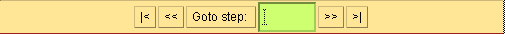
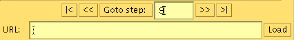

Class Db
java.lang.Object
|
+----java.lang.Thread
|
+----Db
- public class Db
- extends Thread
This class keeps track of the contents of the database and its history.
If the GUI is supposed to connect to a running alma process, we start
a server for the alma history output to connect to. Otherwise we get
connect to the URL of the history file.
The sockets or the history file are read through an input buffer. As long
as there is information in the buffer, we parse it according to the
syntax of the history output.
This information is then used to build the view of the KB as time proceeds.
See elsewhere for a description of the GUI panel generated by this class.

-
 historyWin
historyWin
-

-
 Db(boolean, String)
Db(boolean, String)
- The constructor needs to know whether we are to read the history from
a file, and if it is available, the name of the file.

-
 addToDb(Formula)
addToDb(Formula)
-
-
displayStepNumber()
-
-
dumpDb()
-
-
getDisplayedStep()
-
-
getFirstChange(int, int)
- Given the current step displayed and the desired step, this finds the
first place the two steps differ.
-
getHistoryPanel()
-
-
makeHistoryPanel()
- This makes the display for the DB and the history.
-
removeFromDb(int)
-
-
resetDb()
- This method is used to clear our record of the formulas in the Db.
-
run()
- This method repeatedly tries to parse input according to the
history syntax.
-
synchronizeWindow()
-
-
unsynchronizeWindow()
-
-
updateWindow(int, int)
- After a new step has been read, this updates the window.

 historyWin
historyWin
public TextArea historyWin

 Db
Db
public Db(boolean FromFile,
String fName)
- The constructor needs to know whether we are to read the history from
a file, and if it is available, the name of the file.

 getHistoryPanel
getHistoryPanel
public Panel getHistoryPanel()
run
public void run()
- This method repeatedly tries to parse input according to the
history syntax.
If we are reading from a file and we reach the end of the file,
we wait for a new file to be loaded. In the case of a running alma,
we wait for more history information to be available on the sockets.
- Overrides:
- run in class Thread
addToDb
public void addToDb(Formula form)
removeFromDb
public void removeFromDb(int formIndex)
dumpDb
public void dumpDb()
resetDb
public void resetDb()
- This method is used to clear our record of the formulas in the Db.
This correponds to the reset_alma command.
updateWindow
public int updateWindow(int firstChange,
int stepToDisplay)
- After a new step has been read, this updates the window.
We update the minimum possible instead of redrawing the wholw
window at each step.
getFirstChange
public int getFirstChange(int initialStep,
int newStep)
- Given the current step displayed and the desired step, this finds the
first place the two steps differ.
This is used to know which parts of the window do not need updating.
synchronizeWindow
public void synchronizeWindow()
unsynchronizeWindow
public void unsynchronizeWindow()
getDisplayedStep
public int getDisplayedStep()
displayStepNumber
public void displayStepNumber()
makeHistoryPanel
public void makeHistoryPanel()
- This makes the display for the DB and the history.
The formulas are displayed as:
< FORMULA NAME > : < PRINTABLE FORMULA >
The formula name is a string that can be used to identify the formula
in other literals. The printable formula is an intuitive rendering
of the formula though it may not correspond exactly to the formula
entered.
The control panel is:

-
The first button dispalys the first step in the history.
-
The second button moves back one step in the history.
-
The third button, causes the step in the text field to be displayed.
-
The text field serves to display the step number of the step that is
being displayed. It is editable and can also be used to specify a
particular step to display.
The fourth button causes the next step to be displayed. If there are no
more steps, this will not cause new steps to be computed.
-
The fifth button causes the last step to be displayed. This serves
another purpose which is to synchronize the display with the input
steps.
In usual operation, with alma computing steps instead of reading
from a file, the latest available step is displayed. However,
if any one of the buttons but the last is used, the display is no
longer synchronized with the steps that are being computed by alma.
This allows one to inspect previous steps without always jumping to
the latest step.
The last button resynchronizes the display with the running alma so
that the latest computed step is displayed.
In history file mode, an additional panel is displayed:

This allows one to load new history files. Loading a new file causes
the previous information to be lost.